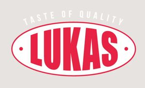

Trade Mark Journal No.2025/017 25 April 2025
WO0000001825035 (30)
Office of origin: Ukraine

The designation is combined. The mark consists of two elements: an oval with dots and the word LUKAS between them, and the inscription TASTE OF QUALITY above along the oval. The letters of the word LUKAS are made in different sizes according to the shape of the oval. The designation is made in red and white colors. The contour of the oval is made in red. In an oval on a white background, the dots and the words LUKAS are made in red. The inscription TASTE OF QUALITY is made in white. The designation consists of only two colors - red and white. For contrasting and clear display of red and white colors, the inscription TASTE OF QUALITY in white, a light gray background is used, which is not part or element of the mark. The background on which the designation is depicted can be of any color.
The mark contains the colours red and white.
LUKAS, the contour of the oval, dots inside the oval are in red. TASTE OF QUALITY and the oval inside are in white.
- Class 30
- Peanut confectionery; cereal bars; high-protein cereal bars; confectionery; croissants; biscuits; cookies; sweets.
PRYVATNE PIDPRYIEMSTVO "VYROBNYCHO-TORHOVA KOMPANIIA "LUKAS"
Representative: Oleksandr Brovchenko, Heroes of Kruty Street, 11, apt. 53, Kremenchuck 39600, UKRAINE